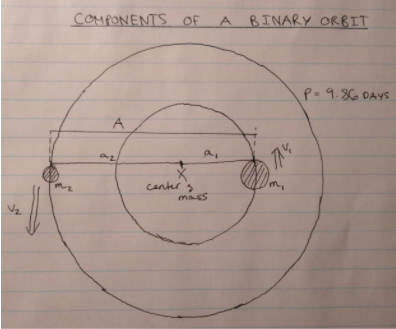
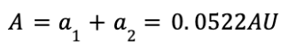
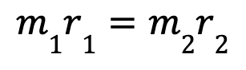
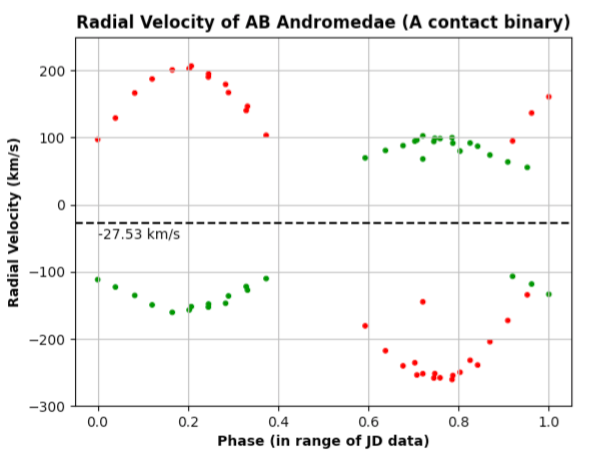

So, we have come to face the terrible truth that calculating the mass
of a star sitting alone in the vacuum of space is physically impossible.
However, there is hope. We know that mass can be derived from observing
the effect of gravity between two objects. There are laws in fact,
starting from Kepler all the way to Newton that explain the rules by
which celestial bodies, like planets or stars behave when they are under
each other's influence. Now, not all stars are like 51 Pegasi or our
Sun, meaning that they are alone. There are many stars, in fact about
half of all known stars, that have a companion, in a distance from them
where they are under each other’s gravitational effect so much so that
they orbit each other. These stars are called Binary Stars.
They can be observed visually by a telescope, if the binary star is
close enough to Earth (like the Alpha Centauri system), or if the two
stars are far enough from each other. Binary stars that are visible
therefore are called visual binaries. However, for most binaries,
this is not the case, and the binary star looks as though it was one
star, since the components are too far away, and the two stars are appear
too close for any human or instrument to be able to visibly see or image
the two, three, or sometimes even four stars in a stellar system. For
these situations however, astronomers can use the same methods that they
use to detect exoplanets: the radial velocity, and transit methods!
For our purposes, we are very interested in getting to know the masses
of the stars, and therefore we are interested in the radial velocity
method (more information in the methods
section). Binary stars that were discovered or can be observed
with the use of this method are known as spectroscopic binaries.
To make collecting data simpler, binary stars are usually similar in
mass to each other (unlike a star and an exoplanet), and therefore it
is not a tiny wobble in the parent star that is being detected, like
with exoplanets, but instead the system of two stars (usually similar
in mass) orbiting each other. This means that it is common for
astronomers to come across so-called double lined spectroscopic
binaries, where when the spectrum of the “star” is taken, there seems
to be two absorption lines for each absorption line. This indicates that
there are two stars present, each of which is giving off its own version
of the absorption lines, and each of which is doppler shifted in opposite
directions, so that the pair of lines would be visible on the same
spectrum (at different wavelengths). Below is a visual representation of
this effect on the spectrum (figure 7). If the absorption lines
of two stars with equal radial velocities were to be observed, then the
two lines would not be visible, since the doppler (red or blue) shift of
the two stars would be equal.
Figure 7: Comparison of a single (top) and double (bottom) lined
spectrum for κ Arietis
Kappa Arietis is the name of the double lined spectroscopic binary
whose spectrum is displayed on figure 7. It might be difficult
to see on the outer emission spectra, but the inner absorption spectra
show clearly that the top spectrum was taken at a time when the two
stars were of equal radial velocity, probably when neither of them had
any radial velocity from our vantage point, meaning that they were
aligned from our line of site, while the bottom shows clearly that each
absorption line is doubled. This measurement on the other hand was
probably taken at a time when the radial velocities of the two components
in this star system were heading in opposite directions, meaning that
one of them was redshifted and the other blueshifted from our perspective,
causing the spectra of the two components to separate.
In this way, astronomers pick out one very prominent absorption line
(usually Hydrogen alpha), and then looking at a lot of spectra
measurements taken at different times, calculate the radial velocity
of both components of that line, at those different times. As already
mentioned, the radial velocity can be calculated from wavelength by the
following equation:
Where v is the radial velocity, c is the speed of light in
a vacuum, while the greek letter lambda denotes the wavelength
of the spectral line. Delta lambda is the change between the
wavelengths of the measured spectral line, and the same spectral line
measured in a laboratory (calculating the doppler shift), while
λ0 denotes the laboratory wavelength also.
So in this way, radial velocity measurements are taken for one
absorption line over many different measurements taken at different
phases of the orbit. Such raw data then, as the next step of the
observations, can be graphed. For our example, let's take the binary
star Beta Orionis B. Beta Orionis is the official name for
Rigel, a star found on the bottom right of the Orion
constellation, seen in the northern night sky in the winter months
(figure 8). Rigel in fact is itself a quadruple star system,
meaning that it is made up of components Rigel A, Ba, Bb, and C. As
seen, Rigel Ba and Bb form a binary system, while this binary star Rigel
B itself forms a binary with Rigel C, both of which also form a binary
with Rigel A. So this is a very exciting system, in which Rigel A is a
blue supergiant, while the other components are B type main sequence
stars (so very hot)!
Figure 8: Constellation of Orion (image from Britannica)
s
Rigel A and BC form a visual binary, separated by an orbital period
of tens of thousands of years! That being said, B and C are still
separated by a huge distance, with an orbital period of 63 years, and
also form a visual binary. So really Ba and Bb, the two components of
Rigel B are the only components discovered as a binary
spectroscopically. They form a double lined spectroscopic binary.
Wanting to see what would happen if the radial velocity raw data for
this binary system were graphed against time, raw data was taken
from a 1942 article by Roscoe Sanford on the system, and then
graphed against time using Python Matplotlib techniques
(figure 9).
Figure 9: Radial velocity vs. time graph for Rigel Ba and Bb
As seen (figure 9), when the double lined spectrum phenomenon
is presented graphically, the results are striking. The radial velocity
curve now has two components, both of which are sinusoidal, but appear
to be reflected on a horizontal axis. This horizontal axis is not at 0,
representing that the two star components together already had a radial
velocity, along with all of Rigel, through the galaxy. This value is
constant. However, as seen, component A and B of the system can be
distinguished, and since they orbit each other, when one of them is
moving away from our vantage point, the other is moving towards us, and
vice versa.
So the first step is completed. We have established that Rigel B forms a
spectroscopic binary, and have cleaned the data in graphical form. From
this, a lot of information can be determined that can help towards
deriving the masses of the components. All of this information is
derived from the graph. The axis on which the two sine curves meet is
the shared radial velocity of the whole system through the galaxy (needs
to be taken as the zero value), the period is the time that it takes for
one wave cycle to be completed, and the velocities are the semi
amplitudes of the two waves. Here is the data, all taken directly from
the above graph:
In other words, the center of mass of Rigel B is moving towards us at
19.1 km/s, Rigel Ba and Bb take 9.86 days to complete one
orbit around each other, and in this orbit, the velocity of the larger
component Ba is 25.0 km/s, while for the smaller component it’s
32.6 km/s. The fact that the larger component has a smaller
velocity makes sense, since its orbit would be smaller, due to less
displacement in the orbit as opposed to the less massive component.
Also, it makes sense that we take the semi amplitudes (maximum radial
velocities) of the components as their true velocity in orbit, since
this maximum radial velocity is achieved when the components are moving
exactly away or towards us in their orbit (at the halfway point). This
would mean that their tangential velocity would be equal to their radial
velocity, and therefore their true velocity in an ideal orbit (figure
10).
Figure 10: Deriving the velocity of both stars (my drawing)
These values are also underpinned by the graphs acquired from the
9th Catalogue for Spectroscopic Binary Orbits (figure 11).
Figure 11: Official radial velocity graph for Rigel B
(from database source).
These values, that have now all been observationally measured, can be
used as the basis of derivations for the mass. This in reality is all
that needs to be known observationally, the rest can be calculated using
physical laws. First however, it is important to be visually able to
understand the important parameters of a binary star orbit, like that of
Rigel B visually (figure 12).

Figure 12: Parameters in a binary orbit (my drawing)
First of all, it is evident that the velocity of Ba in km/day for
example would be equal to the circumference of the orbit (distance in
km) over the period of the orbit (in days). This can be
rearranged to solve for the radius of the orbit for both stars (distance
from the center of mass). Adding these two values will yield the total
distance between the stars:
The same calculation can be applied to the less massive component,
however, knowing that the ratio of the velocities is equal to the ratio
of the distances and also the masses, we can apply that:
Knowing this, the total separation of the two stars can be calculated:

So now we know that the total distance between the components Ba and Bb
of Rigel B is about 0.0533 astronomical units (one AU is the
distance from the Earth to the Sun). So they are very close to each
other, and no wonder they could be only observed spectroscopically.
Now we are really close to calculating the masses of these two
components, knowing their separation and period. In fact, we know that
the semi-major axis, or separation, is directly related to the period of
any orbit from Kepler’s 3rd law:
Or in other words, the period of the orbit squared is proportional to the
semi major axis, or radius of the orbit on the third power. Newton was
able to apply his laws, in particular the laws of gravitation and
centrifugal force, to come up with his own version of this law, that can
be applied to a binary star orbit, since it also involves the mass
parameter of both stars. First of all, Newton’s universal law of
gravitation calculated the force of gravity (in Newtons) between
two celestial objects, or in our case the two binary stars of Rigel B (Ba
and Bb). According to Newton, we can model this gravitational force as:
Untangling the law only a bit allows us to understand the fundamental
way that gravitation behaves. We can see first of all that the force of
gravity decreases by a constant value while the distance increases by a
factor. This means that if the two binary stars were twice as far from
each other, then the gravitational force between them would be 2x2 or 4
times less. This is why we divide by the radius of the orbit squared.
Furthermore, the force of gravity depends on the masses of the two
stars, as seen, or to be exact, the product of their masses. So the
more massive any one of the stars becomes, the more gravitational force
will be present. G represents the gravitational constant, and this is
meant to act, like all constants, as a conversion factor between the
calculated force (kg/m2) into newtons
((kg*m)/s2). This constant was derived theoretically by
Newton, but also calculated experimentally much later by Cavendish.
The second aspect that we need to model is the centrifugal force of the
orbit for one of the stars. We can choose component Ba for this. We know
that since the gravitational force between the two stars Ba and Bb is
constant, or the same for both, the centrifugal force also needs to be
equal for both stars. This is due to the fact that the centrifugal
(outward force due to the rotation) and centripetal (gravitational)
forces in an orbit need to be equal, so that the orbiting stars do not
escape from the orbit (if the centrifugal force was stronger), and also
do not collide (if the gravitational force were to be stronger). So, the
centrifugal force of the orbit, calculated with Ba, can be modelled as
follows:
This makes sense again, since we can understand that the centrifugal
force therefore in Newtons depends on three parameters. The mass, the
velocity, and the orbital radius. As seen, the greater the mass, the
greater this force will be. Similarly, the greater the orbital radius,
the less the force will be. The velocity is related to the centrifugal
force squared, meaning that if the star were twice as fast in its orbit,
the centrifugal force would act on it 2x2=4 times as strong.
Note that we know all of these parameters that are required for these
equations, except for the mass. Like so, Newton was able to isolate the
mass parameter, which will be useful to us, by knowing that the force of
gravity is equal to the centrifugal force:
Now the problem arises that we have two different orbital radii. One of
them, r1 denotes the orbital radius of Ba, while
r denotes the separation of the two stars. However, we can
substitute our the r1> parameter applying the basic
relationships of the orbital parameters of this binary star, or any
other orbit:

This makes sense because the smaller the orbital radius of the star, the
larger its mass has to be to conserve the same centrifugal force, based
on what was discussed. Continuing:
So we can replace the orbital radius of Ba with this new rearrangement,
that only contains that total separation (r):
So now Newton was able to rearrange his findings as we have done above,
to come up with this new formula that stems from Kepler's 3rd law, where
he noted that the orbital radius and the period are proportional, and
takes it further by finding the exact law. As seen, this new law or
version of Kepler’s law involves the total mass of the star system also,
and this is very important for our purposes, since we can rearrange it as:
Since we know all of the parameters: the semi-major axis or total
separation of the two stars, as well as the period of the orbit, we are
set to calculate the total masses of the two stars. Using the above
equation involves the standard SI units, so seconds for the period,
meters for the separation, and therefore will yield the total mass in
kilograms. However, taking out all of the constants yields an equation
that can be used with relative units, and therefore calculate the mass
in solar masses, and use the period in years (relative to Earth) and the
separation in AU (also relative to Earth):
Knowing that the separation of Rigel Ba and Bb is 0.0522AU or about
7.81x109m, and that the period is 9.86 days
which is equivalent to 0.027 years or 851,904 seconds, we can use both
formulas to solve for the total mass of the system:
Using the other equation with the SI units:
As seen, in both instances, we get the result that the total mass of the
binary star Rigel B, or the mass of components Ba and Bb added is about
one fifth of the mass of the Sun (0.2M☉).
Now wait a second! This seems extremely irrelevant based on what we know
about stars. How can two B class super hot blue main sequence stars
together be only one fifth the mass of the Sun itself, which is a G class
moderate yellow star? If we were to take the individual masses of the
two components, they would be even smaller. Knowing that the ratio of
the masses is equal to the ratio of the distances:
So as seen even clearer, we are getting results that suggest that two
B-type main sequence stars, that are many times more luminous and hotter
and even larger than the Sun as suggested by the HR diagram have masses
that are around 1/10 that of the Sun, which is only an average G-type
star! This seems totally wrong. However, there is one aspect that was
not taken into account during this calculation process. That is called
the sin(i) degeneracy, which means that the masses that
are calculated from an orbit can only be considered the minimum
masses of those stars. The true mass will only equal or be
close to the minimum mass if the inclination of the orbit of the binary
system relative to Earth is close to 90 degrees, meaning that it is
parallel to the line of sight, and perpendicular to the plane of the sky.
The more the orbit is inclined, radial velocity measurements will
become smaller and smaller, skewing the results for mass, and only
providing a minimal mass (figure 13).
Figure 13: Diagram representing orbital inclination (my drawing).
So as can be seen, the radial velocity as perceived by observers here on
Earth can be greatly altered by the orbital inclination of an orbit.
What we can theorize with regards to Rigel B is that the inclination of
its orbit must be very high, since the radial velocity measurements also
must be much lower than their real value due to the fact that the
masses are much lower than their probable estimated value.
So in fact, yet again another obstacle. Theoretically, if the inclination
angle could be measured, the true masses of the stars could be
calculated, since the general relation is that:
However, there is no way in current knowledge to be able to calculate
the inclination angle of an orbit. If there was a way to estimate true
mass, from a parameter like luminosity for example, based on the
estimated true mass and the measured minimum mass, the inclination angle
could also be estimated. However, a relation to estimate the true mass
cannot be found until the true masses of at least a dataset worth of
stars can be calculated precisely, so that their masses could be compared
to look for a relation. So astronomers seemed to be stuck by this
degeneracy for a long time. However, theoretical derivations brought
hope.
Also, a possible solution was to look for binary stars that have not only
been detected spectroscopically, but also through the transit method,
since we know that the inclination of an orbit where a binary star was
observed to transit in front of its companion would have to be very
close to 90 degrees. Otherwise, the transit would not be observed.
I found the perfect star for this, so called AB Andromedae, in the
constellation Andromeda. It was first observed with the transit method
(figure 14), which provides the first clue that its orbital
inclination would have to be in a reliable enough range that any mass we
would calculate through the radial velocity method would also be reliable.
Figure 14: Light Curves for AB Andromedae (Parimucha et al.)
After this, I was able to find radial velocity data on this same star
also through the 9th Catalogue of Spectroscopic Binary Orbits.
Graphing the raw data of 70 entries for the double lined radial velocity
data using Matplotlib, just like with the Rigel B binary, I was able to
visually represent the orbit (figure 15).

Figure 15: Radial velocity data for low orbital inclination binary
star AB Andromedae (Pych et al.)
Unfortunately, my graph is very messy, especially towards phase 1.0,
and that is due to the difficulties in interpreting the Julian dates as
time. However, conveniently, a similar graph was included with the
catalogue (figure 16).
Figure 16: RV curves for AB Andromedae (SB9 Catalogue)
It is interesting to see on both graphs that no data points were
measured close to the base RV axis, or dashed lines of the system. This
is probably due to the fact that data points could only be collected
once the spectral lines of the double lined spectroscopic binary
separated. Where there are no points on the spectrum, the lines were
merged due to the low RV shift.
So, just like with Rigel B, again, we can infer all of the parameters
needed and then use the extension of Kepler’s law to calculate their mass:
Knowing both the period and the semi major axis, the total mass, and
therefore the individual masses of A Andromedae and B Andromedae can be
calculated:
Finally, from the ratio of the two masses and the total mass, the mass of
each component is derived:
Now these numbers seem much more reliable, and since from other
analysis, like the one we did with 51 Pegasi in previous sections, we
know that the components of this binary star are G-type and very close
in temperature to the Sun. The extremely short distance and period seems
to suggest that this binary star might even be a contact binary,
meaning that the two components actually touch each other (this star is
listed as a contact binary in catalogs). Regardless of this however, the
numbers are reliable, and this is evidently due to the fact that the
orbital inclination must be very low to permit transit observations also
to be made with this star.
So finally, more or less reliable measurements can be made on the masses
of some binary stars with low orbital inclinations. For these stars, we
can also make the same observations based on their temperature,
luminosity, spectral type, radius, and many others previously discussed.
The only hope for ever finding a way to measure the masses of single
stars is to find, therefore, some sort of relationship between the mass
and another parameter of a star. Starting with the luminosity, I graphed
the masses vs. the luminosities of 10,000 different binary stars where
there was data for these parameters (figure 17). The results
finally provide the answer to how we can estimate the mass of 51 Pegasi.
Figure 17: Mass - Luminosity relation graphed for main sequence stars.
As seen, through an experimental approach, astronomers finally found
that the luminosity and mass of all stars that are the main sequence (for
giants it is more complicated) is closely related. In fact, as seen from
the logarithmic scales on the graph, the relation can be written as
follows:
However, astronomers from more reliable studies have found that the
relationship is more reliable as:
This is revolutionary, since there is finally a way for the mass of any
single star to be estimated from a well known parameter, such as
luminosity. Also, this provides a way to estimate the true mass of any
binary system, which after measuring the minimum mass allows the
calculation of the inclination angle for the orbit. This has been done
for many stars now, and there are catalogues that now exist for orbital
inclinations of many binaries also.
For the sake of 51 Pegasi, applying the relation yields a mass estimate
of about 1.1 solar masses!